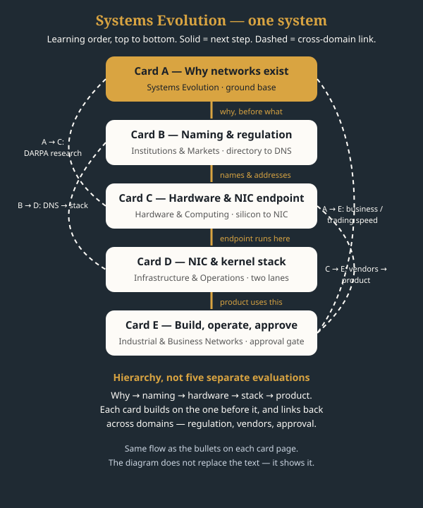

Systems Evolution
Learning sequence
Five cards, in learning order, from why networks exist to building, operating and approving a product.

- Card A — Why networks exist: origins and business need
Networks did not start with computers.
- Card B — Naming, addressing and regulation: directory to DNS
Before DNS, the directory was a telephone book run by government.
- Card C — Hardware supply and the NIC endpoint
Silicon becomes a chip, a chip becomes a vendor's device, and that device only reaches a customer through an endpoint: the NIC.
- Card D — The NIC and kernel stack, plus out-of-band management
This card has two lanes that must not be confused.
- Card E — Building, operating and approving a product
A product closes the loop: it is built by engineering and operations, tested, sold to customers, bought from vendors who buy silicon, and it cannot enter the market until approval is granted.
Illustrations, in learning order
One illustration per card, in sequence — tap a card to open it.


Related topics, by domain
Each related topic goes into its related domain, as a card — linking back to its primary card, not duplicating it.
Systems Evolution
- Card A — Why networks exist: origins and business need
- Card E — Building, operating and approving a product
Institutions & Markets
- Card B — Naming, addressing and regulation: directory to DNS
- Card A — Why networks exist: origins and business need
- Card E — Building, operating and approving a product
Hardware & Computing
- Card C — Hardware supply and the NIC endpoint
- Card D — The NIC and kernel stack, plus out-of-band management
- Card E — Building, operating and approving a product
Infrastructure & Operations
- Card D — The NIC and kernel stack, plus out-of-band management
- Card B — Naming, addressing and regulation: directory to DNS
- Card C — Hardware supply and the NIC endpoint